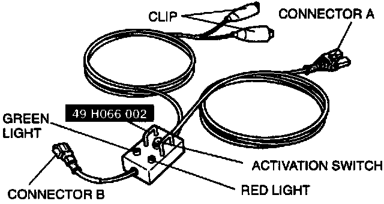
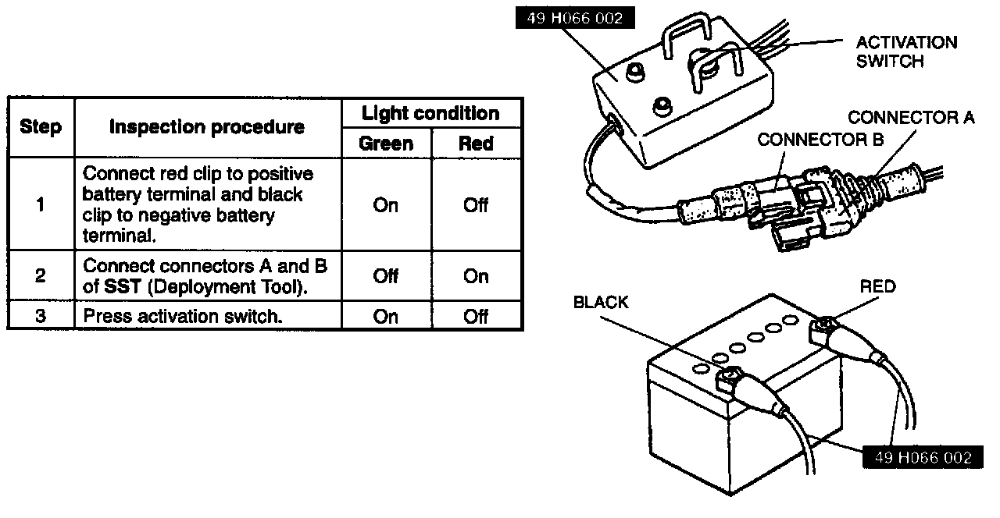

Inspection of SST (Deployment Tool)

Use the SST (Deployment tool) to deploy a live (undeployed) air bag module before disposing of it.
Before using the SST (Deployment tool), inspect its operation.

Inspection Procedure
Follow the steps below to verify that the SST (Deployment tool) is operating correctly.
1. Connect red clip to positive batter terminal and black clip to negative battery terminal.
2. Connect connectors A and B of SST (Deployment Tool).
3. Press activation switch.
If not as specified, do not use the SST (Deployment tool) because it may cause the air bag module to unexpectedly deploy upon connection to the air bag module.